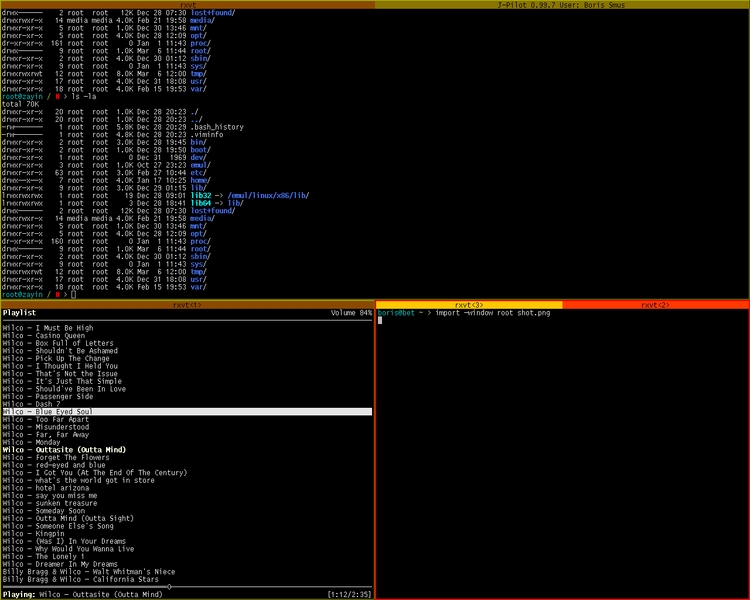

IonWm
page was renamed from Ion
[http://modeemi.cs.tut.fi/~tuomov/ion/ Ion] is a keyboard-oriented window manager for X-windows. It was written by Tuomo Valkonen, creator of [http://modeemi.cs.tut.fi/~tuomov/pwm/ PWM], the first window manager to use tabs. Since PWM, many window managers have adopted tabs, most notably Fluxbox and Ion.
I use Ion on every machine at home. In addition, I compiled it for solaris on the UBC undergraduate servers. It's definetely my preferred window manager. Ion can easily be extended using the powerful scripting language, [http://lua.org Lua]. All of it's config files are written in lua.
= Key Bindings =
I have configured Ion to use vim-like key-bindings. Since most computer keyboards these days have Super (windows) keys, I use this modifier as the DEFAULT_MOD (to avoid conflict with applications that use the meta (alt) key).
The compass rose as per VI is:
{{{ k ^ | h<- ->l | v j }}}
I was going to split the keybindings into 3 submaps: one for workspaces, one for frames and one for windows. This would have been too confusing. So I decided to use {{{hjkl}}} for movement between frames (according to vi's directional scheme), {{{ui}}} to move left and right between windows, {{{yo}}} to move between workspaces.
Obligatory screenshot:

CategoryTool